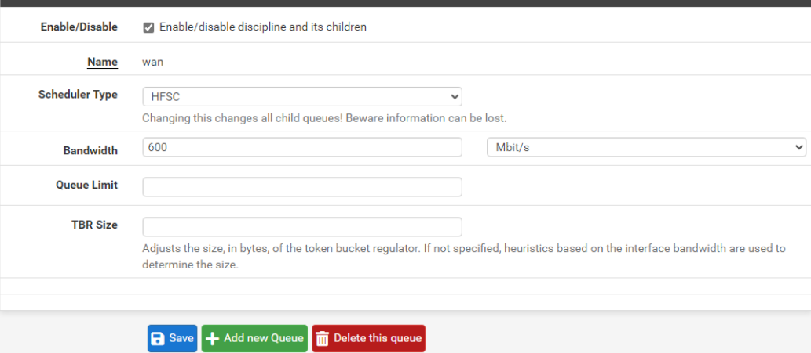
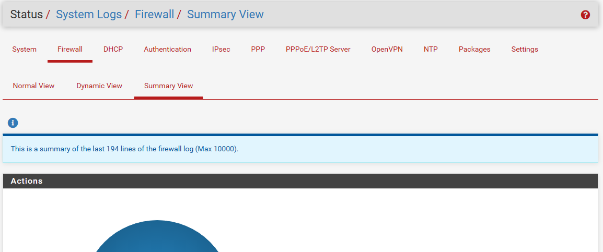
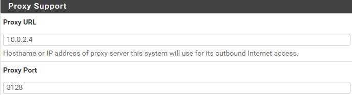

El context
Acabem de rebre un nou servidor! Des de Labdoo ens han fet arribar un servidor perquè l'utilitzem com vulguem dins de l'escola.
Nosaltres, com a membres de l'equip de suport tècnic del centre, sereu els responsables de posar-lo en marxa i configurar-lo.
Sembla una bona idea però... què serà el nostre servidor?
Després de reunir-vos diversos membres de l'equip se'ns han ocorregut moltes idees però finalment hem decidit que, a causa de problemes de seguretat que s'han donat recentment a l'escola, la millor opció podria ser configurar un servidor de firewall o un servidor de proxy.
I per què no ambdues? Podríem crear un únic servidor firewall i proxy! Però... com podem fer-ho?
L'encàrrec
El vostre cap de projecte per a aquest encàrrec pensa que no teniu el nivell necessari per a poder configurar aquest servidor.
Per aquest motiu us aportarà un conjunt de píndoles que us poden ajudar en tot aquest procés.
Per a demostrar al vostre cap que podeu encarregar-vos del servidor,
us ha sol·licitat la realització de dues proves prèvies que haureu de realitzar i validar abans de poder començar a configurar el servidor.
Per cada prova superada rebreu una insígnia. Quan reuniu les tres insígnies podreu començar a configurar el servidor.
El servidor que se us aportarà és un servidor físic, que podreu trobar a l'aula.
Per a poder crear aquest servidor utilitzarem un programari denominat Pfsense.
Per a això deureu:
- Instal·lar Pfsense sobre el servidor físic a partir de la imatge ISO que se us aportarà.
Es recomana a més realitzar una instal·lació en màquina virtual per a realitzar proves.
- Configurar les interfícies de xarxa de manera adequada en PFSense tenint en compte que tenim un servidor web, una altra xarxa amb els ordinadors de l'escola i sortida a Internet.
És important recalcar que el servidor, els equips i la sortida a Internet es troben en xarxes diferents (zona desmilitaritzada).
- Configurar com a mínim una de les següents regles de firewall:
- - HTTPS: Configurar la inspecció HTTPS per a la detecció i prevenció de contingut no segur o inapropiat que pugui passar a través de connexions HTTPS.
- - Política de balanceig de càrregues: Establir una política qui permet distribuir la càrrega de trànsit en la xarxa per a evitar congestions i millorar el rendiment.
- - Control de descàrregues: Establir polítiques per controlar i gestionar descàrregues de grans volums, evitant la saturació de la xarxa i assegurant una distribució equitativa dels recursos.
- - Protecció contra malware: Implementar filtres de protecció contra malware i altres amenaces de seguretat per prevenir l'accés a llocs web maliciosos i protegir els usuaris contra descàrregues pernicioses.
- - Monitorització i informes: Implementar eines de monitorització i generació de informes per supervisar l'ús d'Internet i identificar patrons d'ús. Aquesta informació pot ser valuosa per a la planificació i la millora de l'entorn d'aprenentatge digital.
- - Protecció enfront d'atacs de seguretat externs i intrusos: Instal·lar un sistema de protecció d'intrusos i configurar les regles que es considerin més importants.
- Instal·lar sobre Pfsense un servidor proxy amb SQUID i aplicar com a mínim una de les següents regles:
- - Regles de control d'aplicacions: Establir regles per controlar l'ús d'aplicacions específiques a través de la xarxa, com ara jocs en línia o altres aplicacions no educatives que podrien afectar el rendiment.
- - Límits de bandwidth: Configurar límits de banda ampla per evitar l'ús excessiu de recursos de xarxa. Això pot ajudar a mantenir un rendiment equitatiu i evitar congestions.
- - Control d'accés basat en polítiques: Establir polítiques d'accés basades en rols o en grups d'usuaris. Això pot permetre diferents nivells d'accés a Internet segons els requisits educatius o els privilegis de l'usuari.
- - Gestió de caches: Configurar la gestió de caches per optimitzar el rendiment i reduir el temps de càrrega de pàgines web repetides.
- - Planificació d'horaris d'accés: Configurar horaris d'accés per a determinades categories de llocs web, restringint l'accés durant hores no lectives o en períodes específics.
PFSENSE
pfSense és una distribució personalitzada de FreeBSD adaptat per al seu ús com Firewall i Enrutador.
Es caracteritza per ser de codi obert, pot ser instal·lat en una gran varietat d'ordinadors, i, a més compta amb una interfície web senzilla per a la seva configuració.
La següent llista mostra algunes funcionalitats que s'inclouen predefinidament en el sistema:
- Firewall
- State Table
- Network Address Translation (NAT)
- Multi-wan
- VPN
- Servidor PPPoE
- Servidor DNS
- Servidor DHCP
INSTAL·LACIÓ
Un cop sabem què és pfSense, el primer que farem serà fer la instal·lació. Hem creat un manual pas a pas per tenir una guia.
FIREWALL
Per al firewall només configurarem dues regles:
- Control de descàrregues: Establir polítiques per controlar i gestionar descàrregues de grans volums,
evitant la saturació de la xarxa i assegurant una distribució equitativa dels recursos.
Controlar les descàrregues és una funció important en un firewall per diverses raons clau:
- - Gestió del consum de banda ampla: Les descàrregues de grans volums poden consumir una quantitat significativa de la capacitat de la xarxa.
Això és particularment important en entorns on la capacitat de la xarxa és limitada o compartida entre diversos usuaris o aplicacions.
- - Priorització del trànsit: En llocs on hi ha múltiples usuaris o aplicacions que competeixen per recursos de xarxa limitats, com ara oficines, escoles o empreses, el firewall pot prioritzar cert tipus de trànsit sobre altres.
Per exemple, es pot donar prioritat al trànsit crític per a les operacions de negocis mentre es limita la velocitat de les descàrregues no essencials.
- - Optimització del rendiment: Limitar les descàrregues de grans volums pot ajudar a mantenir un bon rendiment de la xarxa per a tots els usuaris.
Evita que una sola descàrrega monopolitzi tota la capacitat de la xarxa, garantint una distribució equitativa dels recursos i un funcionament fluid per a tothom.
Per implementar aquesta regla a PFSense hem d'anar a Firewall > Traffic Shaper.

- Monitorització i informes: Implementar eines de monitorització i generació de informes per supervisar l'ús d'Internet i identificar patrons d'ús.
Aquesta informació pot ser valuosa per a la planificació i la millora de l'entorn d'aprenentatge digital.

Proxy amb SQUID
Per al proxy configurarem les següentes regles:
- Regles de control d'aplicacions: Establir regles per controlar l'ús d'aplicacions específiques a través de la xarxa,
com ara jocs en línia o altres aplicacions no educatives que podrien afectar el rendiment.
- Planificació d'horaris d'accés: Configurar horaris d'accés per a determinades categories de llocs web,
restringint l'accés durant hores no lectives o en períodes específics.
- Control d'accés basat en polítiques: Establir polítiques d'accés basades en rols o en grups d'usuaris.
Això pot permetre diferents nivells d'accés a Internet segons els requisits educatius o els privilegis de l'usuari.
El plugin de Squid a PFSense té moltes limitacions deixant una configuració molt bàsica i sense cumplir els requeriments mínims que volem,
l'alternativa a aixó és instal·lar i configurar un proxy extern per desprès enllaçar-lo al nostre firewall de Pfsense. Per fer aquesta configuració hem d'anar a: System > General Setup > Proxy Support
Ens demanará el port i l'url del nostre Proxy, és a dir, la IP. En el nostre cas utilitzarem el proxy configurat a l'apartat de Implementació de Servidors Linux i Windows.
Un cop configurat, haurà de quedar como a la captura de pantalla.
